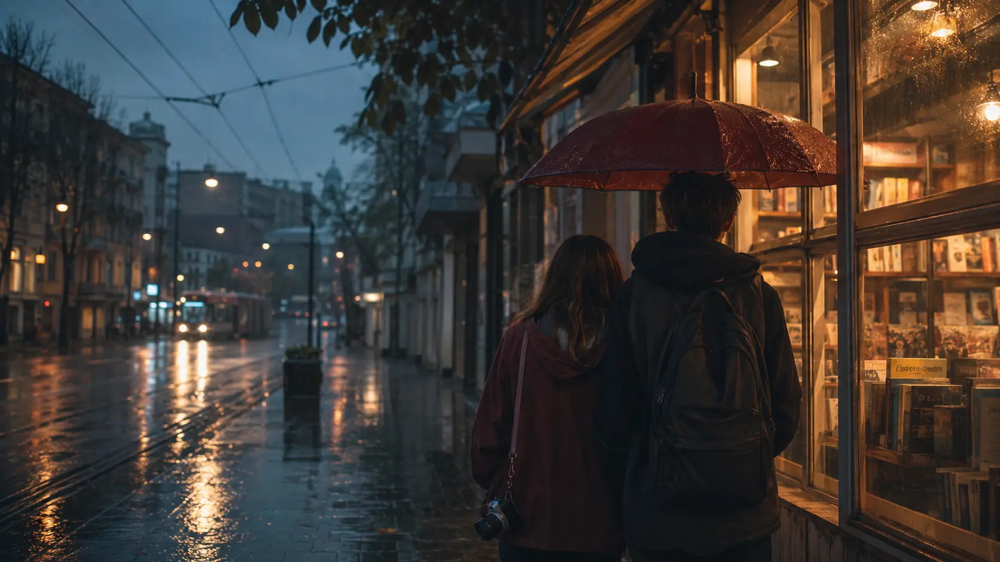
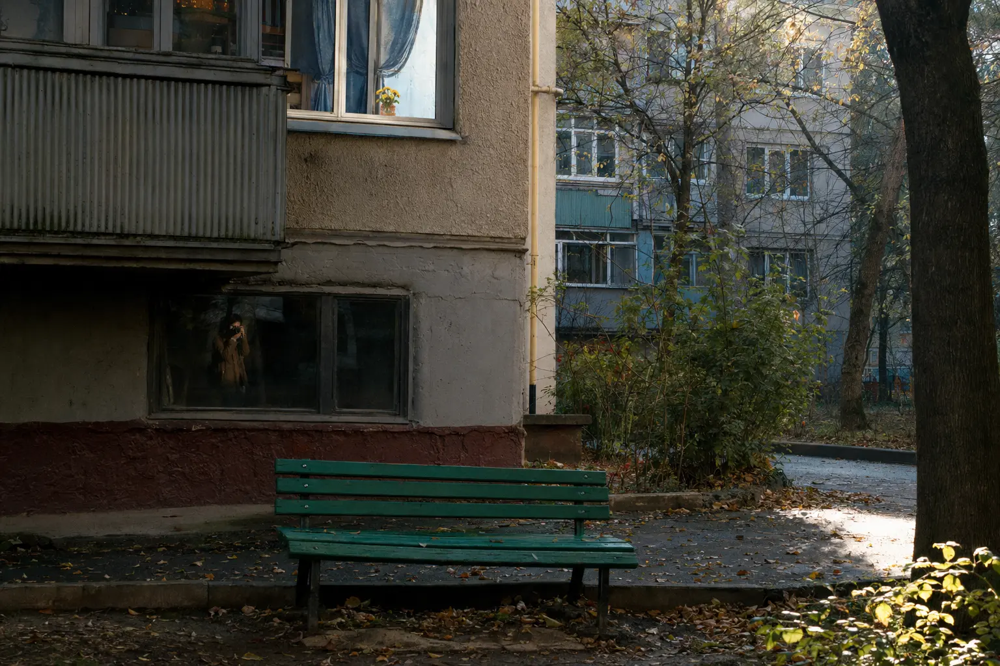

Лисёнок
Амира
Фотографирует людей до того, как они успевают спрятаться. Учится не выбирать между прошлым и будущим.
роман в шестидесяти главах
Иногда случайная переписка — просто несколько строк на экране. А иногда она становится дорогой из Армавира в Ростов и меняет две жизни.
о книге
Амира жила в Армавире и не собиралась доверять незнакомцу из «Некто Ми». Рома всего лишь вмешался в чужой грубый разговор. Они должны были разойтись через несколько сообщений — но остались.
Переезд в Ростов-на-Дону превратил экранное знакомство в настоящее. Дальше были книжный магазин, красные ремешки, фотографии, новые школы, ссоры, примирения и их собственное правило: когда слова заканчиваются, попросить друг у друга ещё семь честных минут.
“Не чтобы обещать вечность, а чтобы честно прожить сегодняшний день.
Лисёнок
Фотографирует людей до того, как они успевают спрятаться. Учится не выбирать между прошлым и будущим.
Котик
Превращает сложные разговоры в код. Приходит раньше и всё ещё утверждает, что ровно на семь минут.
путь истории
Рома перехватывает грубый диалог. Амира отвечает человеку, которого не собиралась запоминать.
Переезд сокращает сотни километров до семи минут ожидания у книжного магазина.
Армавир остаётся памятью, Ростов становится настоящим, а фотография получает имя книги.
Казань и море зовут их в разные стороны. На первой странице новой тетради — «Не забыть вернуться».
визуальная история
Не портреты и не попытка показать «идеальные лица». Это настроение мест, в которых разворачивается история.


полная версия
Все 60 глав доступны прямо здесь. Сайт запомнит последнюю главу, выбранный размер текста, тему и закладки — только на этом устройстве.
Часть I · Армавир
Открываем красную тетрадь…
«История не закончилась.Прочитать финал
Просто последняя страница первой части
наконец оказалась счастливой».